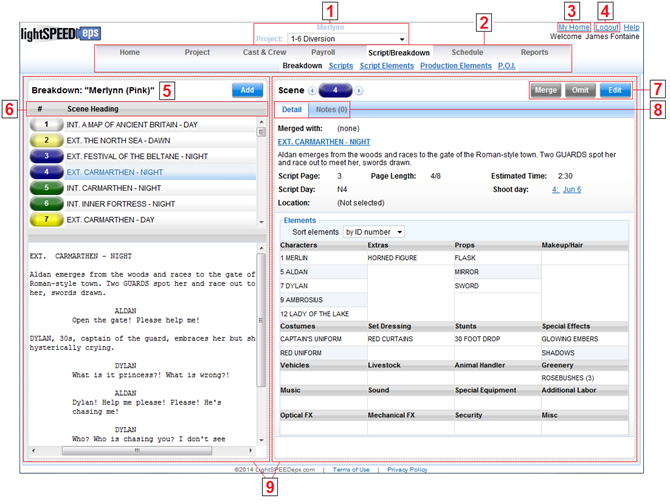

Thank you for choosing Lightspeed. The following guide is intended to help you navigate through the many screens of Lightspeed.
The Lightspeed screen:

1. Production Name/Project Dropdown
2. Navigation Menu
3. Link to My Productions Home Page
4. Logout Button
5. Pane Title
6. Column Header
7. Screen Buttons
8. Mini-Tab Menu
9. Screen Panes
Each of these components is described below.
1.
Production
Name/Project Dropdown
At the center top of the screen you'll find the name of your
Production. If your Production contains
multiple episodes or projects, as with a TV series, a project dropdown menu is
displayed below the Production name.
When you wish to switch to a different project or episode, use the Project dropdown menu to select a different project.
2.
Navigation
Menu
The Navigation Menu is located above the main screen just below the Production
and Project name. A link to your Home
page is at the left side of the menu.
Hover your mouse over the menu to view selections or click on a
selection to go to that page.
3.
Link to
the My Productions Home Page
Click this link to return to your main My Productions Home Page .
4.
Logout
Button
Click this link to log out of the application.
5.
Pane
Title
At the top of each pane is a title in large bold. The title describes the
contents of the pane. For example, the
title of the left pane is “Breakdown” and the title of the right pane is “Scene
4”.
6.
Column
Header
Column headers appear at the top of lists and tables. Most column headers allow you to sort data by
clicking on the fields in the column header.
7.
Screen
Buttons
Screen buttons populate each screen of Lightspeed. Each button contains a self explanatory
title. For more information on what a
specific screen button does, please see the help section for that screen.
8.
Mini-Tab
Menu
Some panes contain mini-tabs.
Mini-tabs are menu selections that allow you to switch between several
pages of detail in a single pane. Click
on a mini-tab to view its data.
9.
Screen
Panes
Each screen in Lightspeed is divided into one or more panes, or
“containers”. In a two paned screen, the
left pane will typically contain a list of items and the right pane will
display the detailed information of whichever item has been selected from the
list. In the sample screenshot above,
the left pane contains a list of scenes and the right pane displays the
breakdown for the selected scene.
Some screens, such as the strip board
viewer, only contain a single pane.
Others, such as your Home welcome page, contain no lists at all.